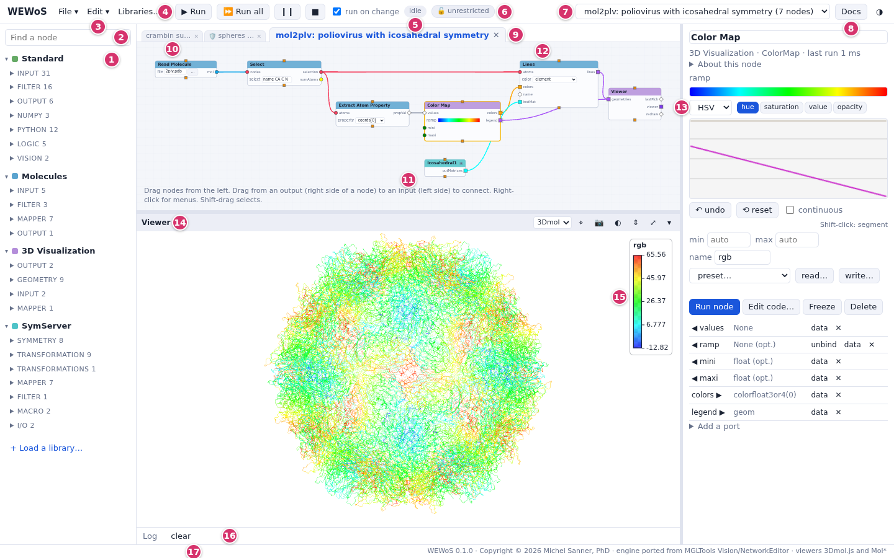

WEWoS
The Web Enabled Workflow System: Vision, the visual programming environment of MGLTools, in a web browser. Build programs by connecting nodes, and see molecules, surfaces, volumes, images and plots as they run.

The idea
A program is a network of nodes. Each node runs a small Python function. Its input ports are on its left edge and its output ports on its right edge. A connection carries data from an output to an input. When a node gets new data it runs and sends its results on, so data flows through the network from left to right.
Inputs can have widgets: a dial, a number, a file name, a menu. Changing a widget runs the part of the network it feeds, so you can explore a computation by turning a dial and watching the result change. Nodes come in libraries: Standard (Python, lists, files, logic), 3D Visualization, Molecules, Volume, SymServer (symmetry), Imaging and MatPlotLib.
Nothing needs to be compiled. Any node's code can be read and changed while the network is open, a set of nodes can be grouped into a macro node, and a Generic node with your own ports and code is a new node.
What WEWoS is
The name stands for Web Enabled Workflow System: a workflow is a network of nodes, and WEWoS builds and runs it from a web browser.
Vision was written by Michel Sanner, Daniel Stoffler and Arthur Olson at The Scripps Research Institute (first presented as ViPEr in 2002, see the history) and distributed with MGLTools. It ran on Python 2, drew its windows with Tk and its 3D views with DejaVu (OpenGL). WEWoS keeps Vision's design and its networks, and moves them to the web:
- a Python 3 port of Vision's engine (NetworkEditor) and of its node libraries runs on a small local server;
- the browser draws the network editor, the widgets and the 3D viewers, which use 3Dmol.js or Mol* in place of DejaVu;
- Vision's saved networks (
*_net.pyfiles) are imported without being run, so the networks written over the years still open (see importing).
The server listens on your machine only, and the address it prints carries a token that keeps other users of the machine out. Node code runs on the server with your rights, as it did in Vision.
The interface
- The libraries of nodes, by category. Drag a node onto the network, or double-click it. Libraries… loads more of them.
- Find a node by name in the loaded libraries.
- File (new, open, save, import a Vision network, examples), Edit (copy, paste, macros, arrange) and Libraries…
- Run the nodes that have new data, Run all, Pause and Stop.
- run on change: when checked, changing a widget runs what it feeds. Next to it, the network's state: idle or running.
- The open networks. Each has its own folder for its files.
- This documentation.
- The network's tab; each macro you open gets a tab next to it.
- The network editor. The mouse wheel zooms, dragging the background pans, Shift-drag selects, f fits the network in view.
- A node: its name in a bar of its library's color, inputs on the left, outputs on the right, widgets on the rows of their inputs.
- The parameter column: the widgets, ports and code of the selected node.
- A 3D viewer, in the row under the network that also holds images and plots.
- A color map legend, drawn over the 3D view.
- The Log: what nodes print, and errors.
- The status line.
Right-click anything (a node, a port, a widget, a connection, the background, a legend) for its menu.